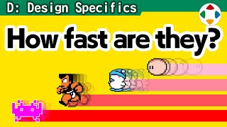
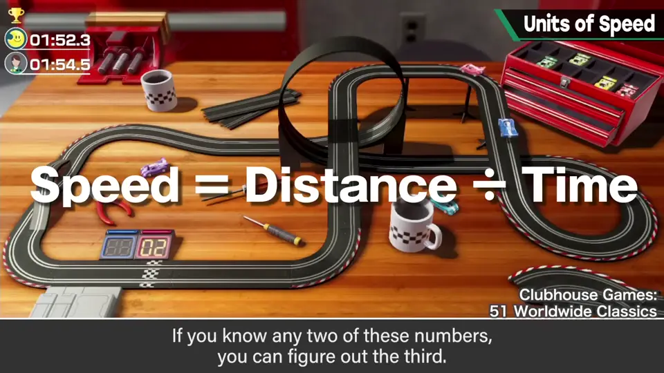
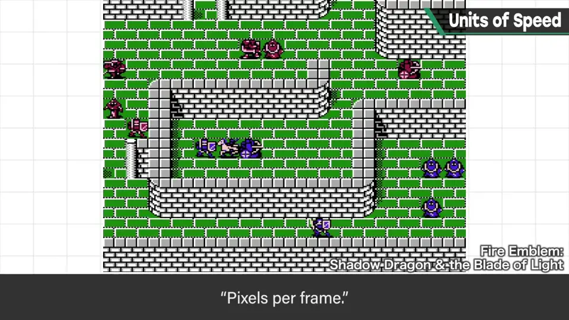
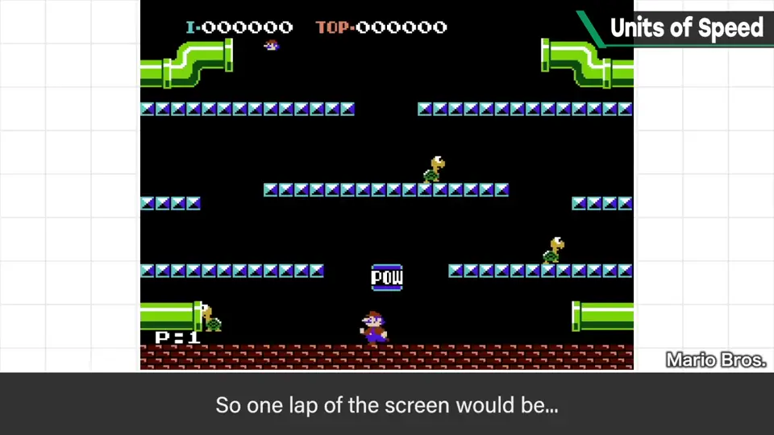
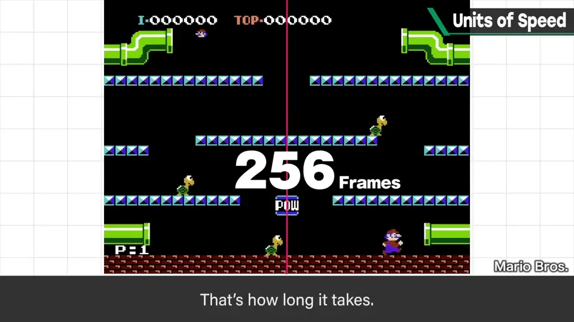
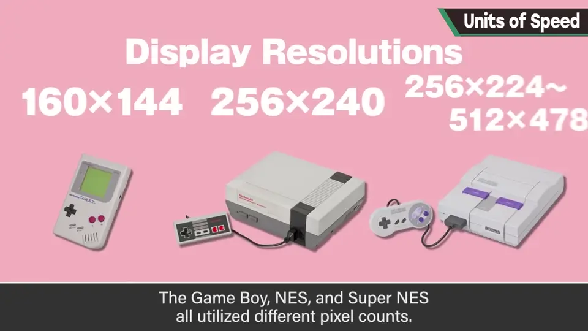
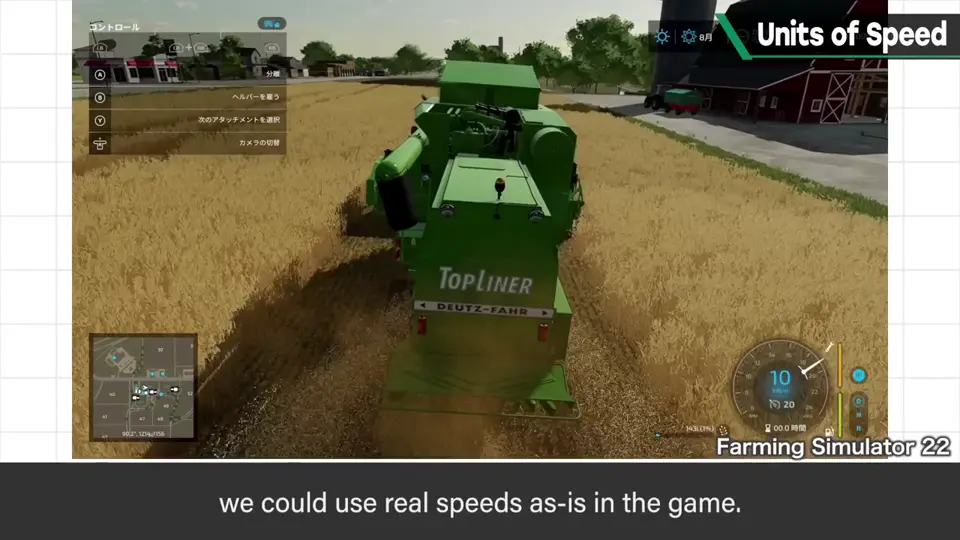
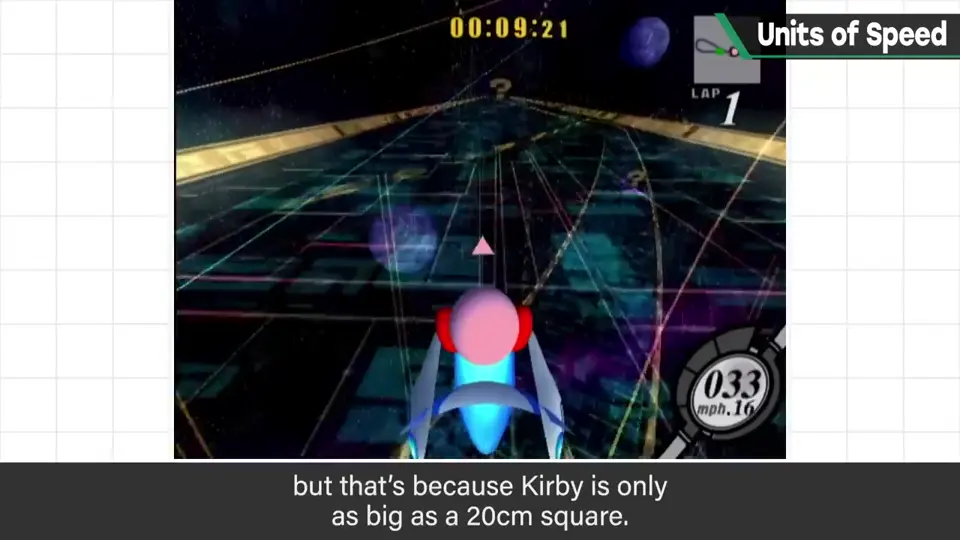
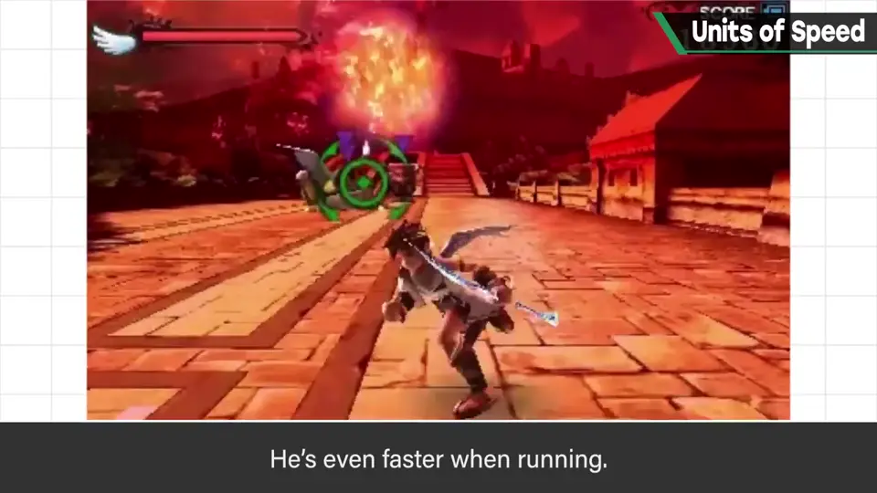
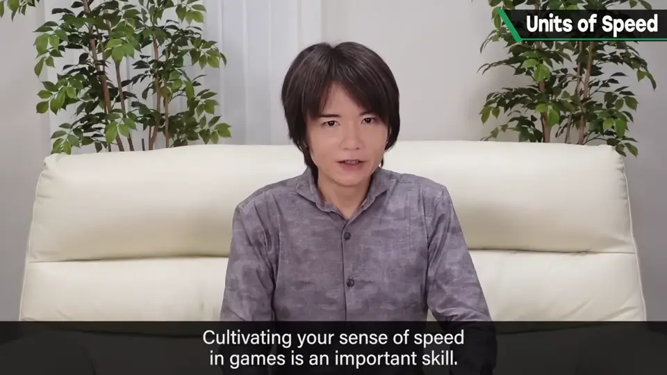

速览
速度掌管游戏中许多东西，非常重要。速度 = 距离 ÷ 时间，三者知道两个就能求出第三个。以前给 FC 等基于精灵（sprite）的游戏写规格时，速度用「点/帧」（pixels per frame）表示：一帧前进几个点。樱井估计《Mario Bros.》里马力欧最高速度大约 1 点/帧；FC 画面宽 256 点，跑完一屏约 219 帧。GB、FC、SFC 的分辨率各不相同——「擂台」大小不同，所以设定同样的数值，实际速度感会完全不同。到了 3D 游戏就能用普通速度单位，比如「公里/小时」：只要用真实单位定义角色和场地大小，真实速度单位就能直接用，也直观。但也不是什么都不用想：有的游戏仍会直接写一帧前进多少，如 m/帧、cm/帧。《卡比的空气骑乘》游戏中显示的是 km/h，时速看起来出奇地低，因为前提是卡比只有 20cm 见方——看着慢，其实相当快。《新·光神话 帕尔提娜之镜》地面战中，皮特连普通走路都快得夸张，正常迈腿根本跟不上，所以让他像小跳步一样走，同时允许脚相对地面滑动。不管是规格书还是参数，表达不出速度就什么都做不了，因此先要统一游戏内距离感的单位和时间单位；还要培养游戏中的速度感——把「大概想这么动」的印象换成参数时数值对得上，这很重要。
1. 速度为什么重要 0:04
速度掌管游戏中各种各样的东西，所以非常重要。

2. 像素时代：点/帧 0:22
以前给 FC 等基于精灵的游戏写规格时，樱井用「点/帧」来表示速度——一帧前进几个点（pixels per frame）。

他估计《Mario Bros.》里马力欧的最高速度大约是 1 点/帧。FC 画面横宽 256 点，跑完一整屏实测大约 219 帧。


3. 分辨率不同，「擂台」不同 1:00
GB、FC、SFC 的点数各不相同（160×144、256×240、256×224~512×478）——等于擂台的大小不一样。

4. 3D：真实单位与例外 1:18
到了 3D 游戏，就能使用普通的速度单位，比如 km/h。只要用真实单位定义角色和场地大小，真实速度单位就能直接拿来用，当然也更直观。

但并不是什么都不用考虑了：视游戏而定，也可能直接写「一帧前进多少」，例如 m/帧、cm/帧。
5. 卡比与皮特的例子 1:49
《卡比的空气骑乘》游戏中显示的单位是 km/h。时速看起来低得出奇，那是因为设定前提是卡比只有 20cm 见方。看着慢，实际上相当快。


《新·光神话 帕尔提娜之镜》的地面战里，其实连普通步行都快得离谱，跑起来更快。按正常方式迈腿根本跟不上，所以让他像踏小步一样走，同时允许脚相对地面打滑。
6. 先统一单位，再培养速度感 2:24
同时要培养对游戏中速度的感觉：把「大概想让它这样动」的印象换成参数时，数值能对得上，这一点很重要。

自测题
1. 速度、距离、时间三者是什么关系？
速度 = 距离 ÷ 时间，知道其中两个就能求出第三个。 0:04
2. 为什么在 GB、FC、SFC 上设同样的「点/帧」会得到不同效果？
三者分辨率（点数）不同，相当于擂台大小不同，所以同样数值的实际速度感完全不同。 1:00
3. 《卡比的空气骑乘》里时速数字为什么显得很低？
因为设定前提是卡比只有 20cm 见方，看着慢其实很快。 1:49